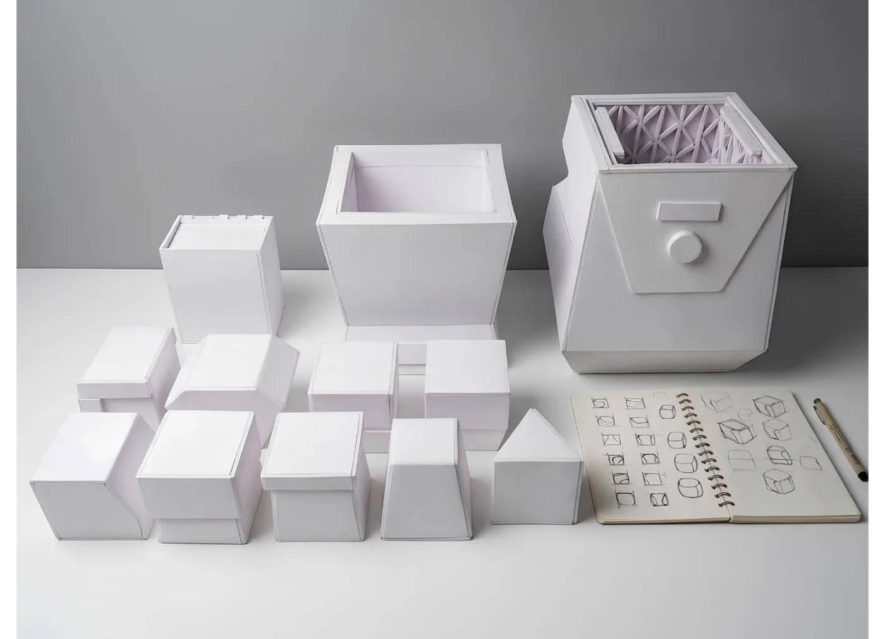
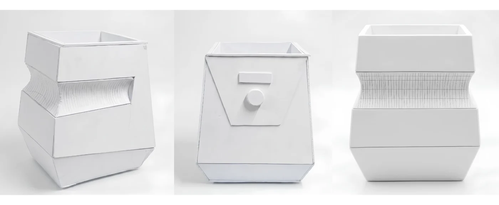

Reserach Scope
What Research Revealed
A broad range of everyday Indian kitchen utensils was studied from frequently used cookware and tableware to tools with more complex geometries.
Apart from the oily and masala stains, cleaning becomes more difficult when food residue settles in areas that are difficult to access manually.


Perforations
Fine mesh
Blades and corners
Grooves & joints
Design Brief
Automated. Effective. Hygienic.
Design a utensil-cleaning system for urban Indian kitchens that simplifies cleaning small, intricate kitchen tools with hard-to-reach areas while reducing manual effort and direct contact with waste.
Reduces manual effort
Targets complex geometries
Reaches Hidden Crevices — Cleans intricate geometries.
Tougher stains may require higher temperatures, longer cycles, and detergent.
Cleaning cycles typically ranged from 5–10 minutes, depending on the load and stain severity.
Severe burnt-on residue may require additional scrubbing.
Metal-Friendly — Hard metals are highly compatible.
Wood, porous materials, soft plastics and silicone are unsuitable or less compatible.
Non-Abrasive Cleaning — Cleans without scratching surfaces.
Residue Accumulates — Food particles settle at the bottom.
Preheating was associated with improved cleaning outcomes in the tested setup.
Full Submersion Matters — observed that plastics were floating and hence received weaker vibrations.
Must Have
Minimal manual scrubbing and effort
Compatibility with Indian utensils
Time Efficient
Should Have
Safe, simple operation
Compact, space-efficient footprint
Easy maintenance and repair
Could Have
Built-in drying
Multiple cleaning modes
Sustainable materials and construction
Low-noise operation
Won't Have
A bulky, permanently installed appliance
App-dependent operation
AI-based utensil recognition and sorting
Fully autonomous loading and unloading
Scaled mockups of initial forms


1:1 Scaled mock up of the selected form

Ultrasonic Utensil Cleaning System
Cleaning small, intricate kitchen tools is time-consuming and often leaves hard-to-reach areas untouched. Kshovik explores ultrasonic cleaning as a way to reduce manual effort and improve cleaning consistency, translating the technology into a compact appliance designed for urban Indian kitchens.
· Research · Computational Form Development · CMF Development · 3D Visualization
Duration — 1 month | Year — 2026
WE CLEAN WHAT WE CAN SEE.
NOT ALWAYS WHAT WE CAN REACH.
70%of users prioritize cleaning large utensils first, leaving smaller tools for later.
58%feel that these tools are “clean enough” visually, even when not thoroughly cleaned.
60%users avoid detailed scrubbing of tools like whisks and strainers.
65%report difficulty in removing residue from tools
with tight gaps, wires, or perforations.
Tackle hard - to - reach areas
like time you can't afford to lose.like a workout you didn't ask for.like a battle with grease & burnt-on food.like cleaning the places your hands can't reach.like touching what you'd rather not touch.like tomorrow's problem.
Reserach Scope
A broad range of everyday Indian kitchen utensils was studied from frequently used cookware and tableware to tools with more complex geometries.
What Research Revealed
Apart from the oily and masala stains, cleaning becomes more difficult when food residue settles in areas that are difficult to access manually.
Blades and cornersPerforationsFine meshGrooves & joints
Design Brief
Design a utensil-cleaning system for urban Indian kitchens that simplifies cleaning small, intricate kitchen tools with hard-to-reach areas while reducing manual effort and direct contact with waste.
- Automated. Effective. Hygienic.
- Reduces manual effort
- Targets complex geometries
ONE PEN. FIVE MINDS. 150 IDEAS.
A spinning pen selected each participant's turn to contribute an idea, which was then recorded through quick notes and sketches. By gamifying brainwriting, we reduced hesitation and overthinking, encouraging spontaneous thinking, unexpected ideas, and a few surprisingly useful concepts that helped shape our design direction.
After short-listing a few ideas based on majority,
we dived into field studies and mock ups to check for feasibility and practicality.
Low-fidelity mock-ups were built to test form, scale, and basic working.
A field visit to a jewellery store helped understand ultrasonic cleaning in real use.
Repurposed a vibration motor and gear from scrap and attached them to a rice cooker, to create vibrations and to evaluate vibration-based cleaning.
Variety of utensils tested in the ultrasonic cleaner at the chemistry department
What the ultrasonic cleaning trials REVEALED.
- Tougher stains may require higher temperatures, longer cycles, and detergent.
- Severe burnt-on residue may require additional scrubbing.
- Wood, porous materials, soft plastics and silicone are unsuitable or less compatible.
- Residue Accumulates — Food particles settle at the bottom.
- Full Submersion Matters — observed that plastics were floating and hence received weaker vibrations.
- Reaches Hidden Crevices — Cleans intricate geometries.
- Cleaning cycles typically ranged from 5–10 minutes, depending on the load and stain severity.
- Metal-Friendly — Hard metals are highly compatible.
- Non-Abrasive Cleaning — Cleans without scratching surfaces.
- Preheating was associated with improved cleaning outcomes in the tested setup.
THE TECHNOLOGY WORKED. NOW, WHAT SHOULD THE PRODUCT BECOME
Early experiments showed promising cleaning results, even on intricate utensils. The next challenge was to translate this potential into a thoughtfully designed appliance for everyday Indian kitchens.
Must Have
- Minimal manual scrubbing and effort
- Compatibility with Indian utensils
- Time Efficient
Should Have
- Safe, simple operation
- Compact, space-efficient footprint
- Easy maintenance and repair
Could Have
- Multiple cleaning modes
- Low-noise operation
- Sustainable materials and construction
- Built-in drying
Won't Have
- A bulky, permanently installed appliance
- Fully autonomous loading and unloading
- App-dependent operation
- AI-based utensil recognition and sorting
Scaled mockups of initial forms

1:1 Scaled mock up of the selected form

Mock-ups were developed to assess utensil capacity, inner wire-basket placement, and the positioning of ultrasonic transducers and motors.
KSHOVIK draws inspiration from the grounded proportions of traditional Indian vessels, translating them into a futuristic appliance form. Faceted surfaces, inward geometry, and a stable base create a compact yet technologically expressive presence.
WE WENT BACK TO OUR USERS
“The purifier-like form is appealing, the basket can double as a draining rack, and the square footprint makes room for more utensils.”
“The grip is in the right place, but it needs to be more comfortable and easier to hold.”
“I’d like a lid to keep the utensils covered while cleaning and when the appliance is not in use.”
“Lifting the entire appliance to drain the water is cumbersome. A built-in drainage system would make it much easier.”
40kHz ultrasonic transducer
5.5L stainless steel tank
Low, Medium, High, on a digital screen knob
SS304 mesh, above the transducers
PC-ABS, geometric, after the matka
Transparent, to watch the clean
Manual rotary valve, straight to the sink